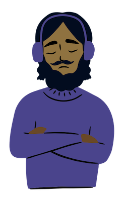
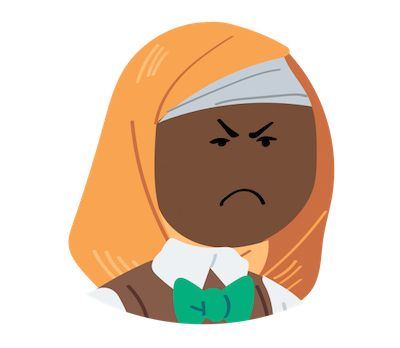
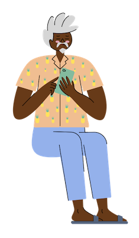
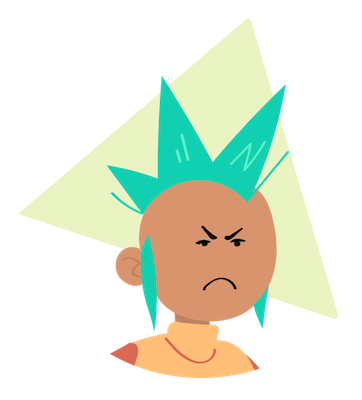
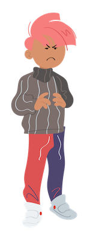

ملخص القصة
تدور هذه القصة حول عمر، طفل كان يشعر بالانعزال والتنمر في المدرسة، ولكنه كان يحب حل المشاكل والتفكير بإبداع. اكتشف
عمر البرمجة وبدأ بتعلمها بنفسه، وبالعمل الجاد والمثابرة، تحول إلى واحد من أشهر المبرمجين في العالم. لم ينسى عمر
تجربته الصعبة وقرر الانتقام بمساعدة الآخرين في تحقيق أحلامهم، وبهذا الشكل، أصبح قدوة للكثيرين وأثبت أن النجاح يأتي
من العمل الجاد ومن مساعدة الآخرين.
الفصل الأول
يتحدث هذا الفصل عن طفولة عمر و ذهابه إلى المدرسة والمشاكل التي واجهها

عمر: أووووه المدرسة مرة أخرى
الأم: نعم وماذا في ذلك يجب أن تدرس جيدا كي تكون مهندسا أو طبيبا

الأب: ماذا قلت كررها مرة أخرى إن كانو يسمونك رجلا هل تتذمر من المدرسة مرة أخرى تعرف أننا
ندفع المال هنا

عمر: تعرفون أن هذه رابع مرة أنتقل منها من مدرسة لأخرى
الأب: هذا لأن رأسك فارغ لا تحصل على نقاط جيدة كل زملائك يمرون و أنت تبقى دائما في الخلف
الأم: أنت على حق دائما ما يحرجني أمام أمهات اصدقائه حتى هم لا يتوقفون عن الكلام عن المدرسة
في جلاستهم يفعلون هذا عمدا بسبب ولدي
عمر: أنتم حقا لا تساعدونني ولو قليلا سئمت منكم
عمر يفكر مع نفسه في هذا الموقف : لا يعرفون أنني دائما أتعرض للتنمر وهذا يقلل من تركيزي و هؤلاء الذين تسمونهم
أصدقاء مجرد مستغلين لي
الأب: إذا إنتهيت فل تنم وتستعد غدا سأنقلك إلى مدرستك الجديدة فل تكن مع وفاق مع الأولاد
الأخارين
بعد نوم عمر ومعناته في تفكره أن غدا يومه الأول في المدرسة و نومه نوما عميقا
الأم: أين ذلك الحداء هذا الولد الغبي لم يستيقط إلى الآن هل ينوي التأخر في يومه الأول
عمر: ماهذا الإزعاج في الصباح الباكر حسنا حسنا أنا قادم
بعد إستيقاط عمر وتناوله الفطور و لبس الملابس إستعدادا للمدرسة دهب مع والده في السيارة...
الأب:
الأب يفكر مع نفسه: لماذا تعابير وجهه لا تبدو طبيعية وجدتها ربما هو خجول لملاقات أصدقائه الجدد
عمر: أوووه المدرسة كبيرة و جميلة أتمنى أن أكون على وفاق معهم
دخل عمر للمدرسة و ذهب إلى أول مادة لذيه وذخل القسم....
الأستادة: فل تصمتوا جميعا معنا تلميد جديد أتمنى أن ترحبو به جميعا فل تذخل يا عمر وعرفنا
بنفسك ولا تخجل
عمر: مرحبا جميع إسمي عمر و اتمنى أن نكون جميعا أصدقاء جيدين

حمزة: ههههههههههه يهمس لزميله "ضحية جديدة يإبراهيم رأيت رأيت إنه خجول"

إبراهيم: يهمس هو الآخر "نعم نهم أعتقد هذه السنة لن تكون مملة كالسنة الماضية أرسلنا كل
الأولاد إلى مدارس أخرى لم يتحملو هههه"
الأستادة: فل تتعرفو على صديقكم أكثر يمكنكم كرح بعض الأسئلة عليه
حمزة: يهمس لصديق: "أنظر سأسله عن مواهبه أضمن لك لن تكون له أي موهبة" ماهي موهبتك يا
عمر؟
عمر: عمر يفكر مع نفسه: "موهبة مممم ماهي موهبتي لا أعرف بماذا أجيب أوووه أضن أنني أحب حل
المشاكل ولكن هذه ليست موهبة مممم"
حمزة: لا تطل في التفكير كثيرا ليس لذيك موهبة لاجدوى من البحث عنها أنظر فقط إلى شكلك (القسم
يضحك)
الأستادة: أعد ما قلته و ستخرج من الفصل
حمزة: أحسن الخروج و لا أنظر لوجهه لن يكون هناك فرق بين الحضور والغياب مع وجهه الغبي هههه
عمر: عمر يفكر مع نفسه: "لا أعرف لماذا أنا دائما هذه المرة الخامسة في حياتي أتعرض لنفس
الموقف في خمس أماكن مختلف يالي من مثير للشفقة لا أستطع نطق ولو كلمة ذائما الأشياء التي أريد قولها تحدث في عقلي
وليس الواقع"
.....